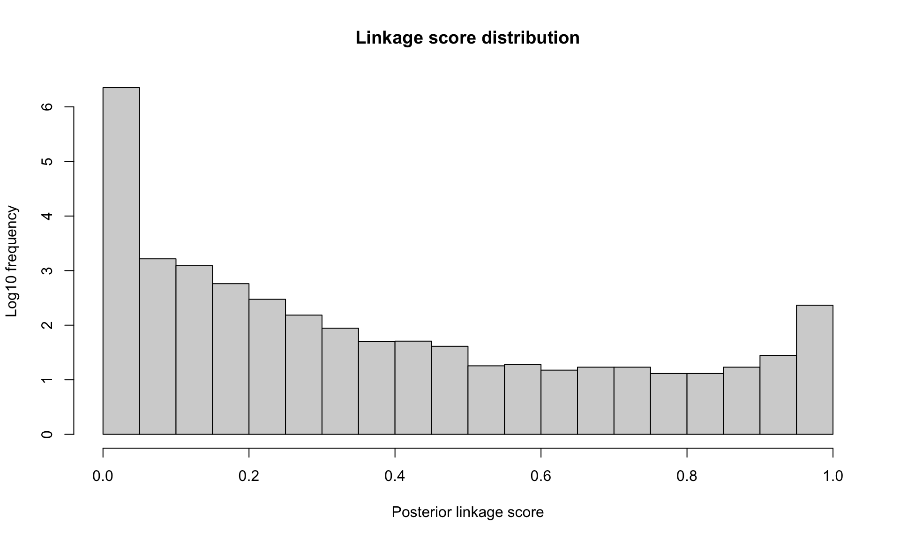
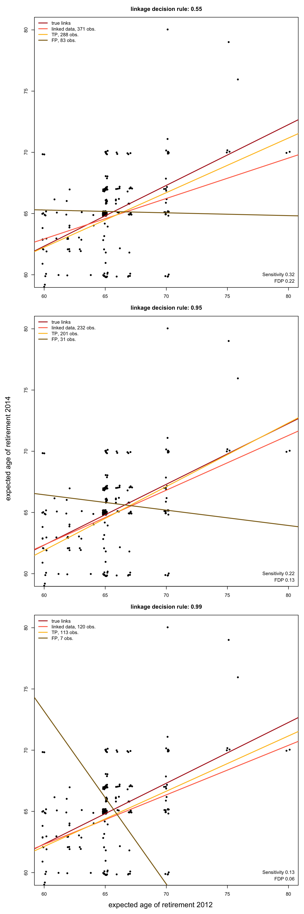

flowchart TB raw(raw sources data1, data2) --> prep(prepare_data, checks, encodes, raises warnings) sim(simulate_data) --> prep prep --> naive(naive_linkage) prep --> fit(StEM) fit --> delta(linkage output Δ, chains γ, η, α, φ) delta --> diag(RL_diagnostics, print, plot) wrap(link_with_<pkg>) --> diag diag --> alles(convergence, linkage score, FDP estimation, discrepancy measures, agreement rates, data comparison)
FlexRL: an R package for Flexible Record Linkage and Linked Data Quality Assessment
Source:vignettes/Article-FlexRL.qmd
1 Introduction
Researchers and statistical agencies increasingly combine data sources that do not share a unique identifier (Cleaton et al. 2024; Laidler et al. 2025; Kramer 2026). Record linkage connects records referring to the same entity across sources based on Partially Identifying Variables (PIVs) (e.g. birth year, sex, postal code or product code, brand and category). Each PIV has limited discriminative power on its own and may be missing, incorrectly recorded or change over time. Record linkage underpins the production of official statistics, enables the reuse of administrative and registry data for research (Collaborative et al. 2020; Pontesilli et al. 2021; Cooney et al. 2023) and improves data quality through linkage and deduplication.
Linked data sets become the study sample for downstream analyses, where linkage errors may propagate (JC and KL 2020; Wang et al. 2022; Vo et al. 2024; Robach et al. 2026). Errors arise when missing links between entities that appear in both sources or when falsely linking records from distinct entities. These errors cannot be reduced simultaneously and may bias the conclusions drawn from linked data (Wang et al. 2022; JC and KL 2020; Robach et al. 2026). A stricter decision rule reduces falsely linked pairs but misses more links. Practitioners therefore need not only record linkage methods, but also tools to quantify linkage errors and appraise their consequences for statistical analysis.
Two main probabilistic approaches to record linkage have developed through times. First, the traditional mixture model (Fellegi and Sunter 1969; Jaro 1989; Larsen 1999; Fortini et al. 2001; Sadinle 2017) treats linkage as a classification problem between pairs of records that are similar and pairs that are not. Second, the hierarchical entity resolution framework (Tancredi and Liseo 2011; Steorts 2015; Steorts et al. 2016; Marchant et al. 2021, 2023) models the data generation process, considering observed values as potentially distorted versions of true latent values. The latter framework uses all the information contained in the records and is therefore more flexible but more computationally demanding. It has been implemented in R for entity resolution (clustering records from a single file into entities) rather than for linkage between two data sources.
We address this gap with the FlexRL R package, which makes two contributions. First, it implements the hierarchical record linkage model proposed by Robach, van der Pas, et al. (2025). The model is fitted with a stochastic expectation maximisation (StEM) algorithm that accounts for registration errors and temporal changes in PIVs. Its architecture and efficient Rcpp backend support scalability to large data sets and a wide range of applications: health monitoring studies, survey waves, census and administrative records or data from different retailers. Second, it provides tools to assess the quality of the linked data, which quantify the linkage error and sample selection. FlexRL implements two estimators of the False Discovery Proportion (FDP): one derived from linkage scores (Belin and Rubin 1995; Resnick and Asher 2019; Enamorado et al. 2019) and one based on synthetic data (Robach, Hof, et al. 2025). FlexRL measures the divergence of the linked sample from the original sources using standardised mean differences, overlap of supports, maximum mean discrepancy and agreement rates. These tools only need the linked pairs and, when available, their linkage scores. They therefore apply to the output of any linkage method and FlexRL provides wrappers for several existing R packages.
The FlexRL package is aimed at practitioners, statistical agencies and researchers who need to link data sources without a unique identifier or who want to measure the error and the sample selection induced by record linkage. It builds on three lines of work: the biases that linkage errors cause in inference (Lahiri and Larsen 2005; Tancredi and Liseo 2015; JC and KL 2020; Wang et al. 2022; Robach et al. 2026); the need for linked data quality control in practice (Harron et al. 2017; Harron K 2020; Lam et al. 2024; Laidler et al. 2025); advances in record linkage methodology (Sadinle 2017; Marchant et al. 2023; Robach, van der Pas, et al. 2025). By combining record linkage and diagnostics in a practical tool, it helps evaluate whether inference can be conducted on linked data.
Throughout the paper, we motivate and illustrate the main components of FlexRL on the 2012 and 2014 waves of the Survey on Household Income and Wealth (SHIW), conducted and made available by the Bank of Italy for research purposes. Section 2 introduces the notation, the modelling paradigms, the existing software and demonstrates the potential of FlexRL. Section 3 presents the record linkage model implemented in FlexRL and its estimation on a subset of the SHIW. On the resulting linked data, Section 4 describes the diagnostic tools FlexRL provides, and illustrates the impact of linkage errors on a socio-economic regression analysis. Section 5 demonstrates the scalability of FlexRL approach to record linkage on the SHIW. Section 6 concludes.
2 The record linkage problem
2.1 Setup and notation
We consider two overlapping samples and from the same population with and records. Both sources record the same categorical PIVs, indexed by with possible values each. Index refers to a record in and index to a record in For PIV , we denote by the registered (observed) value and by the true (latent) value in record We define and analogously. Registered values differ from true values because of registration errors: missing values or mistakes (e.g. typographical errors). We write and for the collections of all registered and all true values. True values may also differ between the two data collections. This is the case for dynamic PIVs like postal code. Whereas stable PIVs like birth year cannot change. For an entity recorded in both sources, the true values of stable PIVs are therefore identical in and and any disagreement between their registered values is due to registration errors. We elaborate on dynamic PIVs later.
The object of interest is the linkage matrix , with if records and refer to the same entity. We assume that there is no duplicate within a data source. Thus, each record forms a link with at most one record in the other data source: for all and for all This is the one-to-one assignment constraint, also referred to as bipartite matching (Sadinle 2017). We denote by the probability that a record from forms a link with a record from , that is, the overlap between the sources as a fraction of the smaller data set.
Since record linkage is imperfect, the linked data contain two types of error: false positives (pairs declared linked while referring to distinct entities) and false negatives (true links that are missed). The non-links in the Cartesian product are far more numerous than the links and are rarely of interest. The useful summaries are therefore the False Discovery Proportion (FDP) among the linked data (complement of precision or positive predictive value) and the sensitivity (also called recall, complement of miss rate). The two errors affect inference differently: falsely linked pairs contaminate the inference and missed links induce sample selection (JC and KL 2020; Robach et al. 2026).
2.2 Modelling paradigms
Linkage methods can be grouped into four paradigms (SB et al. 2014; Binette and Steorts 2022). Deterministic (rule based) linkage declares a link when records agree on a set of variables, exactly or up to a tolerance. Supervised methods train a classifier on pairs whose linkage status is known (Mudgal et al. 2018); such labelled pairs are seldom available. The two remaining paradigms are unsupervised and probabilistic, and differ in what they model:
2.2.1 Paradigm 1: classification of comparison vectors
The traditional approach (Fellegi and Sunter 1969; Dunn 1946; Newcombe et al. 1959; Tepping 1968) reduces the data to comparison vectors. For each pair , a vector records whether elements and for agree or how similar they are. The pairs of records are split into the set of matched and the set of unmatched The comparison vectors follow a two components mixture: where in this paradigm is the proportion of links among all pairs. Under the assumption that the comparisons are independent given the linkage status, and factorise over The parameters are then estimated with an EM algorithm (Jaro 1989; Larsen 1999). Pairs are classified by thresholding the ratios or the posterior linkage probabilities. Bayesian versions place a prior on the linkage matrix to enforce the one-to-one assignment constraint (Fortini et al. 2001; Sadinle 2017) or a prior on a partition of the records when there are more than two sources or duplicates (Aleshin-Guendel and Sadinle 2023). The computations are simple and fast, but memory intensive because they operate on comparison vectors. Scaling to large data sets may therefore require blocking, which compares only pairs that agree on some variables (R. C. Steorts et al. 2014). This paradigm treats pairs as independent although they share records, and the reduction to comparison vectors discards part of the information contained in the records.
2.2.2 Paradigm 2: hierarchical modelling
The second family models how the data were generated (Tancredi and Liseo 2011; Steorts 2015; Steorts et al. 2016; Marchant et al. 2021, 2023; Robach, van der Pas, et al. 2025). Registered values are seen as distorted versions of latent true values , which define the linkage structure The joint model reads with a model for registration errors , a model for underlying true values and a model for the linkage structure Since records are never reduced to pairwise comparisons, the model can separate missing values, mistakes and changes over time, and it does not need blocking to fit in memory. However, it is more computationally demanding.
2.3 Existing software
In Python, recordlinkage (Bruin 2019), Splink (Linacre et al. 2022) and NameMatch (Jelveh et al. 2022) implement Paradigm 1. We list the main R packages for the task considered here in Table 1. Paradigm 2 is only available in R through methods for entity resolution (R. Steorts et al. 2014; Marchant et al. 2021, 2023). These methods cluster records from a single file, possibly containing duplicates, into entities.
CRAN compared with FlexRL. The FlexRL package diagnostic tools apply to all these packages.
| Package | Paradigm | Estimation | Linkage structure | PIVs dynamics | Quality tools |
|---|---|---|---|---|---|
| fedmatch (Friedrichs et al. 2023; Cohen et al. 2021) | comparison vectors | push relabel maximum flow | many-to-many | no | no |
| diyar (Nsonwu 2023) | comparison vectors | multistage weights comparisons, fixed score level parameters | clusters | no | no |
| reclin2 (van der Laan 2025) | comparison vectors, supervised | EM, machine learning | one-to-one post hoc | no | no |
| fastLink (Enamorado et al. 2019; Ted Enamorado 2023) | comparison vectors | EM | one-to-one post hoc | no | no |
| BRL (Sadinle 2020; Sadinle 2017) | comparison vectors | Bayesian, bipartite prior, Gibbs sampler | one-to-one in model | no | no |
| multilink (Aleshin-Guendel 2023; Aleshin-Guendel and Sadinle 2023) | comparison vectors | Bayesian, partition prior, Gibbs sampler | clusters, one-to-one in model | no | no |
| FlexRL (Robach and Hof 2026) | hierarchical | stochastic EM | one-to-one in model | yes | yes |
To our knowledge, no R package implements Paradigm 2 for the linkage of two sources under the one-to-one assignment constraint or models the dynamics of PIVs over time. While the postlink package (Bukke et al. 2026) develops statistical tools for post-linkage data analysis, no record linkage package provides tools to assess the quality of the linked data and their suitability for inference.
The FlexRL package is available from the Comprehensive R Archive Network (CRAN) or from the package GitHub repository alongside documentation and vignettes describing its functionality. FlexRL is also available as a module in JASP 1.0. The implementation of FlexRL relies on Rcpp for the backend samplers, Matrix for the sparse likelihood and linkage matrix, and other standard R packages. The diagnostic tools apply to any record linkage output in the required format, with built-in wrappers for BRL, diyar, fastLink, fedmatch, multilink and reclin2. Figure 1 shows the workflow, which follows the structure of Section 3 and Section 4: the data are prepared, linked with StEM() and the linked data quality is assessed with RL_diagnostics(). We elaborate on each component along the article.
2.4 Demonstration
2.4.1 Simulation study
As a preliminary demonstration of the functionalities of FlexRL, we simulate data with the package simulate_data() function. This function synthesises two files with a given overlap, given rates of mistakes and missing values per PIV and file, and given hazard coefficients for structured PIVs, useful to explore and compare record linkage methods. Here, we generate two data sets of 350 and 400 records, with 300 entities common to both. Entities are represented by four PIVs. We distort the data in each file with 2% of mistakes and 0.5% of missing values; one of the PIVs undergoes temporal changes.
| Naive | BRL | multilink | fastLink | reclin2 | diyar | fedmatch | FlexRL (dynamics) | FlexRL (no dynamic) | |
|---|---|---|---|---|---|---|---|---|---|
| TP | 174.00 | 166.00 | 177.00 | 155.00 | 170.00 | 33.00 | 187.00 | 200.00 | 163.00 |
| FP | 78.00 | 34.00 | 45.00 | 44.00 | 65.00 | 1.00 | 160.00 | 35.00 | 32.00 |
| FN | 126.00 | 134.00 | 123.00 | 145.00 | 130.00 | 267.00 | 113.00 | 100.00 | 137.00 |
| sensitivity | 0.58 | 0.55 | 0.59 | 0.52 | 0.57 | 0.11 | 0.62 | 0.67 | 0.54 |
| FDP | 0.31 | 0.17 | 0.20 | 0.22 | 0.28 | 0.03 | 0.46 | 0.15 | 0.16 |
| est. FDP score | NA | 0.19 | NA | 0.31 | 0.39 | NA | 0.11 | 0.16 | 0.16 |
| est. FDP* score | NA | 0.20 | NA | 0.32 | 0.40 | NA | 0.11 | 0.17 | 0.17 |
| est. FDP* synth | NA | 0.16 | 0.29 | 0.23 | 0.40 | 0.00 | NA | 0.40 | 0.34 |
| max SMD | NA | 0.15 | 0.09 | 0.16 | 0.20 | 0.66 | 0.15 | 0.12 | 0.20 |
| min support IoU | NA | 0.86 | 0.86 | 0.86 | 0.86 | 0.86 | 0.86 | 0.86 | 0.86 |
| max MMD | NA | 0.01 | 0.00 | 0.01 | 0.01 | 0.13 | 0.01 | 0.01 | 0.01 |
| time (secs) | 0.12 | 1.17 | 28.86 | 1.54 | 0.26 | 1.67 | 1.91 | 81.05 | 63.45 |
| memory (Mb) | 1.50 | 51.20 | 147.40 | 24.90 | 76.90 | 108.70 | 39.90 | 107.10 | 83.10 |
This short simulation study demonstrates the potential of the FlexRL package. In Table 2, we compare the methods presented in Table 1 to the FlexRL record linkage algorithm with and without modelling PIVs dynamics in terms of sensitivity and FDP. Since FlexRL provides linked data quality diagnostics for all methods, we additionally report three estimates of the FDP along with measures of the divergence of the linked sample from the data sources. Details are deferred to later sections; Section 4.2 presents the FDP estimators implemented in the package and Section 4.3 discusses the measures of divergence.
When appropriate, modelling PIVs dynamics improves record linkage by increasing sensitivity (more true links are recovered) while keeping the FDP under control (Robach, van der Pas, et al. 2025). Table 2 also shows the differences in computational time and in memory usage between the methods. More details over this demonstration showcasing the utility of accounting for PIVs dynamics are given in the package vignette ‘Linkage and Diagnostics with FlexRL’ available through vignette('FlexRL-RL-vignette', 'FlexRL') or the online documentation.
3 The hierarchical model estimation
3.1 Data preparation and PIVs configuration
The record linkage model requires each PIV to be categorical, encoded by integers with missing values coded as The PIVs must cover a common support across the two sources. The smaller source should be labelled as
As a first step in the workflow represented in Figure 1, the prepare_data() function which we will describe validates the PIVs configuration, labels the data sources and encodes the PIVs. When a unique identifier is available, like in simulation studies or in benchmark record linkage data such as the SHIW, it also returns the set of true links. This set may be used to evaluate linkage performance.
The function naive_linkage() links records that agree exactly on all PIVs (a missing value matching any value when na_match = TRUE), without enforcing the one-to-one constraint. When the true links are known, the performance of this deterministic linkage indicates the discriminative power of the PIVs and the difficulty of the task. The FDP of the naive linkage reflects how many records share the same combination of PIV values.
The package distinguishes three kinds of PIVs, which determine how the components of the complete data likelihood of Equation 3 are used:
- Stable: the true values do not change (e.g. birth year). The PIV is used to form candidate pairs (we elaborate on candidate pairs in Section 3.2) and its probability of mistake may be bounded (for example by ) for algorithm stability (Robach, van der Pas, et al. 2025).
-
Dynamic: the true values may change (e.g. postal code between two survey waves):
- Flexible: changes cannot be modelled, typically because registration dates are not available. The PIV is still used to form candidate pairs, but its probability of mistake should not be bounded, so that the registration model absorbs both mistakes and changes.
- Structured: changes are modelled by the survival function of Equation 4. The PIV is not used to form candidate pairs. Registration dates are needed in both sources and covariates for the hazard may be supplied. Mistakes cannot be distinguished from temporal changes, so the probability of mistake should be fixed (for example at ), unless enough linked pairs have time gaps near zero, where changes are not plausible and mistakes can be estimated without confusion. Estimating the changes also requires variation in the time gaps among linked pairs.
To illustrate the usage of the FlexRL package throughout the paper, we consider the Emilia-Romagna regional subset of the SHIW data. The record linkage task can be validated in this example where the linkage structure can be reconstructed. The 2012 and 2014 waves respectively cover 1502 and 1538 individuals, with 912 individuals observed in both waves. In Section 4, we analyse a regression of the expected age of retirement in 2014 on the expected age of retirement in 2012.
To link the two survey waves, we use the following variables: year and region of birth, sex, marital status, working status and branch of activity. The strong association between working status and branch of activity violates the PIVs independence assumption of the method and may degrade the record linkage performance (Robach, van der Pas, et al. 2025). We thus combine these variables into a single variable ‘occupation’. Although marital status and occupation are ‘dynamic’ PIVs, we do not have enough information to model their temporal changes and set them as ‘flexible’ in the configuration:
PIVs_config <- list(BirthYear = list(dynamics = "stable",
bound_mistakes = c(0.10, 0.10),
fix_mistakes = c(NA, NA)),
Sex = list(dynamics = "stable",
bound_mistakes = c(0.10, 0.10),
fix_mistakes = c(NA, NA)),
MaritalStatus = list(dynamics = "flexible",
bound_mistakes = c(NA, NA),
fix_mistakes = c(NA, NA)),
BirthRegion = list(dynamics = "stable",
bound_mistakes = c(0.10, 0.10),
fix_mistakes = c(NA, NA)),
Occupation = list(dynamics = "flexible",
bound_mistakes = c(NA, NA),
fix_mistakes = c(NA, NA)))
PIVs <- names(PIVs_config)We prepare the two data sources for the StEM() record linkage algorithm with the prepare_data() function, which takes as inputs the data sources and their label df2012, df2014, '2012', '2014'; the PIVs configuration PIVs_config; a logical same_mistakes describing whether the parameters fitting the probability of mistakes among PIVs should be the same between data sources (TRUE when the data are sampled from a same source population); a potential record identifier variable uniq_id when available; a logical restrict_support_intersection to restrict the data to common support (the StEM() function may raise errors when setting to FALSE).
prep_data <- prepare_data(df2012, df2014, "2012", "2014", PIVs_config,
same_mistakes = TRUE, uniq_id = "ID")'2014' is the larger source, saved as B; '2012' saved as A.This function outputs a list suited for StEM(), where data sources have been encoded and labelled as encodedA and encodedB. It additionally includes the number of unique values per PIV n_values, the validated PIVs_config, the logical same_mistakes and a data set of indices of true links true_pairs when uniq_id was provided. It alerts the user to potential issues, including inconsistent configurations, strongly associated PIVs and values outside the common support. For instance, the following warnings appear on the Emilia-Romagna subsets of the 2012 and 2014 waves of the SHIW data:
PIV 'BirthYear': values out of the common support in data1 [1920, 1912] in data2 [2013, 2014].PIVs 'Occupation' and 'Sex' are associated (Cramer's V = 0.32 in data1, 0.35 in data2); FlexRL assumes conditional independence between PIVs, consider merging or dropping one.Among the true links, known in this application, there are some registration errors or temporal changes in the PIVs. As a consequence the true links do not necessarily carry the exact same information in their records. With the RL_agreement function, the user can see the proportion of agreements among pairs of records (for example among linked pairs of records or, in the case presented below, among true links).
BirthYear Sex MaritalStatus BirthRegion Occupation
0.99 1.00 0.98 0.99 0.82 In Table 3, we compare the record linkage methods mentioned in Table 1 on this regional subset of the SHIW data. Memory usage is of the same order of magnitude on these relatively small data sets for all methods.
| Naive | BRL | multilink | fastLink | reclin2 | diyar | fedmatch | FlexRL | |
|---|---|---|---|---|---|---|---|---|
| TP | 710.00 | 152.00 | 290.00 | 452.00 | 721.00 | 20.00 | 510.00 | 293.00 |
| FP | 3494.00 | 23.00 | 421.00 | 865.00 | 339232.00 | 0.00 | 969.00 | 104.00 |
| FN | 188.00 | 746.00 | 608.00 | 446.00 | 177.00 | 878.00 | 388.00 | 605.00 |
| sensitivity | 0.79 | 0.17 | 0.32 | 0.50 | 0.80 | 0.02 | 0.57 | 0.33 |
| FDP | 0.83 | 0.13 | 0.59 | 0.66 | 1.00 | 0.00 | 0.66 | 0.26 |
| time (secs) | 0.33 | 17.83 | 1118.58 | 34.20 | 0.83 | 11.24 | 9.13 | 854.66 |
| memory (Mb) | 8.30 | 511.70 | 1799.10 | 2139.60 | 1016.80 | 723.00 | 222.10 | 307.60 |
3.2 StEM estimation
The FlexRL hierarchical model for record linkage adapts Equation 2 to two sources under the one-to-one assignment constraint. For non-linked records, the true values are independent draws from the population distribution. For a linked pair , is a copy of except when is a dynamic PIV, whose values may have changed between the two registrations. The registered values are versions of the true values distorted by registration errors.
With parameters , the complete data likelihood factorises as Each component is developed in the original methodological paper (Robach, van der Pas, et al. 2025).
Notably, the changes over time are modelled with a survival function, representing the probability that true values have not changed between data collections. By default, the package uses an exponential model with proportional hazards. For a dynamic structured PIV whose changes are modelled and a linked pair with time gap : where contains an intercept and, optionally, covariates from either data source that explain the hazard of change (for example age or income for a relocation) and contains the log hazard coefficients. The user can choose another survival model, such as a Weibull, a Gompertz, a piecewise constant hazard or any custom model.
The likelihood of the observed data is given by Equation 3, summed over all values of the latent and FlexRL StEM() function maximises the likelihood with a stochastic EM algorithm (Celeux and Diebolt 1986). The E-step draws the latent variables from their distribution given the current parameters with a Gibbs sampler and the M-step maximises the resulting complete data likelihood. Algorithm 1 summarises the procedure.
Algorithm 1
Input: encoded sources G_A, G_B; PIV configuration;
N_StEM iterations (burn-in N0_StEM); N_Gibbs iterations (burn-in N0_Gibbs)
Initialise θ = (γ, η, α, φ)
for StEM iter = 1, ..., N_StEM do
Δ ← 0
# stochastic E-step
for Gibbs iter = 1, ..., N_Gibbs do
draw H_A, H_B | G_A, G_B, Δ, θ, x, t
form candidate pairs (i,j) such that H_A[i,k] = H_B[j,k] for all stable or flexible k
for each non-linked candidate pair: propose to link
for each linked pair: propose to break the link
accept each proposal with the likelihood of the model
if Gibbs iter > N0_Gibbs then
store: count of linked data, true values crosstab, agreements G = H, x, t
end if
end for
# M-step
update and store θ = (γ, η, α, φ)
end for
θ_hat ← average of θ over StEM iter > N0_StEM
run further Gibbs iterations at θ_hat to build D_hat:
D_hat[i,j] ← proportion of iterations in which (i,j) is linkedStochastic EM for record linkage.
3.2.1 Initialisation
The probability is drawn uniformly in , the distributions of each PIV , , are uniform over the values, the probabilities of mistakes are drawn in and the probabilities of missing values are set to the observed proportions. For structured PIVs, the log baseline hazard is drawn between and per time unit and the covariate coefficients near The user can supply other starting values.
3.2.2 Stochastic E-step
Given , the Gibbs sampler alternates two blocks. First, the true values are drawn. For a non-linked record or is drawn from weighted by the registration model. For a linked pair is drawn jointly among the possible values, from weighted by the registration model and the survival model. Second, the linkage is updated. Candidate pairs are the pairs whose sampled true values agree on all PIVs that are not structured. For these, we compute the log likelihood contribution of the pair when linked, , and of the two records when not linked, A sequential sweep over the candidate pairs then proposes to create or break links. A proposal is accepted with probability , where the two log likelihoods differ by and by the contributions from changes in the linkage matrix.
Restricting the sweep to candidate pairs keeps the algorithm light in memory: likelihood contributions are computed only for these pairs and for the remaining non-linked records in each data source, which together represent the estimated unique entities in the population.
3.2.3 M-step
The summary statistics averaged over the Gibbs draws after burn-in give the parameters updates. Thanks to the factorisation of Equation 3, , and have separate closed form updates, and is obtained by numerical optimisation. Optional bounds on the probabilities of a mistake are applied at this stage. A warning is displayed when a bound is reached in many iterations, suggesting that the bound is too tight or that the PIV is dynamic.
3.3 Linkage scores and decision rule
Based on the StEM chains of estimates, we build an estimate of the set of parameters, , by averaging the post burn-in elements in the sequence. These are used to sample further linkage matrices that are averaged to return a probabilistic estimate of as a final output, namely , whose entries are the posterior probabilities for the pair to be linked, which we call the linkage scores. A decision rule on each entry then defines the final set of linked data Since the scores of a record sum to at most one, a threshold of at least ensures the one-to-one assignment (Tancredi and Liseo 2011; Sadinle 2017). The choice of is the subject of the upcoming Section 4.
Note that, probabilistic record linkage methods estimate in comparable ways, by classifying pairs according to their linkage scores. Although these scores may be on different scales (e.g. likelihood ratios, log odds, posterior probabilities), they can be mapped to a probability scale. Hereafter, we take linkage scores to be posterior linkage probabilities in and treat all the methods listed in Table 1 in the same way.
3.4 Record linkage with StEM()
StEM() runs Algorithm 1. Its main arguments are:
-
data: a list, typically the output ofprepare_data(), with the encoded sourcesencodedAandencodedB, the number of distinct values of each PIVn_values(excluding missing values), a logical indicating whether both sources share the registration error parameterssame_mistakes, and the PIVs configurationPIVs_config. -
StEM_iter,StEM_burnin,gibbs_iter,gibbs_burnin: the numbers of iterations of the outer StEM algorithm and of the inner Gibbs sampler, and their burn-in periods.gibbs_burnin = 0sets the burn-in automatically: the sampler runs until the number of links changes by fewer than 10 for 10 consecutive iterations, with a maximum of 500 iterations. -
model_dynamics: the survival model for structured PIVs, by default the exponential model of Equation 4. It is only used if a PIV is declared structured inPIVs_config. -
n_post_sample: the number of posterior draws used to compute the linkage scores. - Starting values for and for the agreement probabilities can be supplied.
- For long runs,
new_directoryandsave_info_iter = TRUEsave the environment after each StEM iteration, andmusic_on = TRUEplays a short tune when the algorithm finishes running.
The function returns Delta, a data frame with columns i (indices in ), j (indices in ) and x (scores ) for every pair with a positive score, and the four chains: gamma (a vector of length StEM_iter), eta (one StEM_iter matrix per PIV), alpha (one matrix per structured PIV, with StEM_iter rows and one column per parameter of the survival model) and phi (one StEM_iter matrix per PIV: agreement in , in , missing in , in ).
We run the FlexRL StEM algorithm for record linkage as follows:
fit <- StEM(data = prep_data)3.5 Computational aspects
The two latent variable samplers are implemented with Rcpp. To draw the true values, sampleH() goes through the joint values once per PIV for linked pairs and through the values once per PIV for non-linked records. sampleD() performs the sequential sweep over candidate pairs and stores the linkage as a hash map, so that the cost of a sweep is nearly linear in the number of candidate pairs and the memory is linear in the number of links built rather than in
Candidate pairs are found by hashing the pattern of sampled true values on the PIVs that are not structured, an operation linear in , and their likelihood contributions are stored in a sparse matrix. Memory therefore grows with the number of records and of candidate pairs, not with Running time grows with the number of records; the number of candidate pairs, larger when PIVs have few levels; the number of PIVs and their numbers of levels; the number of structured PIVs, whose survival model is estimated at each iteration; the number of iterations. All random draws use the random number generator of R, so that set.seed() makes a run reproducible.
4 Inference on linked data
4.1 Impact of linkage errors on linear regression
Suppose we are interested in estimating the association between recorded in and recorded in , for instance through the slope of the linear regression , with and , so that The target is in the population of entities present in both sources. The analyst only observes the linked data with from and from equals for truly linked pairs but belongs to another entity for falsely linked records. Among the linked data, a proportion (that may in reality depend on ) carries the correct and a proportion carries a spurious one. Below we denote by the estimator of , with for pairs in Truly linked pairs of records (true positives, TP) are thus denoted and falsely linked pairs of records (false positives, FP) Heuristically, where and denote expectations among truly and falsely linked pairs.
Let us recast accordingly. If has the same mean and variance among all data in , then is a mixture of and , defined like in Equation 5 for the subsets of TP and FP, Linkage errors are often assumed to occur at random, in which case and However, the PIVs, often demographic, are likely to be associated with variables of interest in the analysis, so it is more realistic to consider an association between and among falsely linked pairs. Hence, the error of the analysis splits into two parts: Missed links may cause sample selection and falsely linked data may cause measurement error in the linked variables (Wang et al. 2022; JC and KL 2020; Robach et al. 2026).
4.1.1 Linkage decision rule trade-off
Raising the threshold on the linkage scores reduces the number of falsely linked pairs, which lowers the FDP and hence the contamination bias. Falsely linked data would distort the signal in proportion to the FDP. Indeed, from Equation 6 we derive:
However, raising the threshold also selects fewer and more atypical records, which may increase the sampling bias due to the implicit record linkage selection. Indeed, the chance of being linked may be related to and as a consequence:
These aspects motivate the complementary tools we develop in FlexRL to quantify these two biases. Estimating the FDP (see Section 4.2) and evaluating the divergence of the linked sample from the data sources (see Section 4.3) over a range of values of may help users appraise this trade-off.
4.2 False discovery proportion
For the decision rule , the FDP is where and are the numbers of truly and falsely linked pairs. In real data applications this quantity is unknown. Linkage errors can be estimated from the scores of the linkage model (Belin and Rubin 1995; Resnick and Asher 2019; Enamorado et al. 2019), from synthetic data (Lam et al. 2024; Robach, Hof, et al. 2025) or from a separate model under conditions on the distribution of the number of records per entity (Blakely and Salmond 2002; Dasylva and Goussanou 2020, 2022). FlexRL implements the first two estimation procedures. We focus on the FDP because it drives the contamination bias of Equation 8; the sampling bias is addressed by the diagnostics of Section 4.3. The estimators are provided as functions of , together with the linked sample size available for inference, so that the user can choose a threshold controlling the estimated FDP (and hopefully, the true underlying FDP).
4.2.1 Score based estimator
If the linkage model is well calibrated, should represent the probability that the pair is a true link, and the expected number of truly linked pairs among linked data is Therefore This estimator comes at no extra cost for any method that returns linkage scores, but it is only as good as the linkage model. The calibration of the scores is affected by missing values and mistakes, the size of the overlap between the sources, the number of entities in the population, the discriminative power of the PIVs, their changes over time, and their marginal and joint distributions.
4.2.2 Synthetic data estimator
An estimator that does not rely on linkage scores can be computed with synthetic data (Robach, Hof, et al. 2025). Source is augmented with synthetic records, drawn from a generative model fitted on the PIVs of —for example arf (Watson et al. 2023), synthpop (Nowok et al. 2016) or mice (Buuren and Groothuis-Oudshoorn 2011). Synthetic records by definition do not form a link in , so synthetic links can represent false positives when links and non-links have similar distributions (Robach, Hof, et al. 2025). Then is estimated by scaling the number of synthetic links by and, like for the score based estimator, is estimated by the number of (real) linked pairs : The procedure is repeated over several synthetic draws and the results are averaged. The estimator does not depend on the linkage model, but it depends on the quality of the data synthesis.
4.3 Representativeness of the linked sample
As explained in Section 4.1, the linked sample may differ from the data sources in ways the analyst cannot see (JC and KL 2020; Wang et al. 2022; Robach et al. 2026). In particular, we appraise the sampling bias of Equation 9 by comparing the distributions of variables of interest between the linked data (‘selected’ through record linkage) and the original data sources. For any decision rule , FlexRL compares each source with its linked subset using the following measures, computed on sets of variables and available in sources and respectively:
- Agreement rates: the proportion of linked pairs whose records agree on , for each variable (such as the PIVs).
- Standardised mean differences: , for a continuous variable in a given set; the same quantity is computed for the indicator of each level when is categorical.
- Overlap of supports: the intersection over union of the sets of values taken in the linked sample and in the source, for a variable in a given set.
- Maximum mean discrepancy: a multivariate measure of the difference between the linked sample and the source, computed jointly over a given set of variables, with a Gaussian kernel and the median heuristic for the bandwidth (Gretton et al. 2012).
These quantities are computed over a grid of values of They are built on the declared pairs and, when available, their linkage scores; they therefore apply to any linkage method.
4.4 Diagnostics
RL_diagnostics() gathers the tools of Section 4.2 and Section 4.3, summarised in Table 4, and returns an S3 object of class RL_diagnostics, with print and plot methods. All measures are computed over a grid of thresholds (when the linkage method allows it by returning scores) or for a fixed threshold when specified. Each diagnostic can also be computed on its own. We present all commands hereafter but show only some outputs. Further details on these diagnostic tools are given in the package vignette ‘Linkage and Diagnostics with FlexRL’ available through vignette('FlexRL-RL-vignette', 'FlexRL') or the online documentation.
RL_diagnostics().
| Diagnostic | Computation | Display |
|---|---|---|
| Convergence |
plot_StEM_convergence() on the chains returned by StEM()
|
plot(x, 'convergence') |
| Linkage scores | plot_linkage_scores() |
plot(x, 'scores') |
| FDP estimation |
compute_RL_FDP_score() (Equation 10), compute_augmRL_FDP_synth() (Equation 11) |
plot(x, 'FDP') |
| Discrepancy measures |
smd(), support_iou(), mmd(), RL_agreement()
|
plot(x, 'discrepancy') |
| Data comparison |
plot_distributions() on each source and its linked subset |
plot(x, 'distributions') |
The function takes several arguments as input. The record linkage output fit, the data sources encodedA and encodedB, the set of variables of interest to compare compare_vars, their type vars_type_cont (TRUE if continuous) and the PIVs are passed to RL_diagnostics(), which computes FDP estimates and discrepancy measures that characterise the linked sample across a grid of thresholds
compare_vars <- c("BirthYear", "Sex", "MaritalStatus",
"BirthRegion", "Occupation")
vars_type_cont <- list(BirthYear = TRUE, Sex = FALSE, MaritalStatus = FALSE,
BirthRegion = FALSE, Occupation = FALSE)
diag <- RL_diagnostics(fit, prep_data$encodedA, prep_data$encodedB,
compare_vars, vars_type_cont, PIVs,
true_pairs = prep_data$true_pairs, FDP_estimation = TRUE,
RL_method = "FlexRL", data = prep_data,
n_repeats = 5)The FDP estimation is optional (FDP_estimation = TRUE) since it can be time consuming. For a given RL_method, it is repeated n_repeats times and the estimates are averaged. compute_RL_FDP_score() returns the score based estimate on the original task. compute_augmRL_FDP_synth() adds n_synth records generated by synth_method to , links the augmented sources as an auxiliary task and computes both the score based and the synthetic data estimates on it. Similar score based estimates on the original and augmented tasks support the use of the synthetic data estimator. Table 2 reported these three estimates as ‘est. FDP score’, ‘est. FDP* score’, ‘est. FDP* synth’.
The plot(x, type) method for an object of class RL_diagnostics draws the plots listed in Table 4, with type being one of 'convergence', 'scores', 'FDP', 'discrepancy' and 'distributions'. With the 'convergence' plots, we could verify that the StEM chains have stabilised.
plot(diag, 'convergence')With the 'scores' plot, we can analyse the distribution of the linkage scores of the fit as shown in Figure 2.
plot(diag, 'scores')
Albeit bimodal, the distribution of linkage scores produced by the record linkage algorithm does not indicate where to set the threshold The FDP estimation results and the divergence plots may help further. In Figure 3 we show the 'FDP' plot and some of the 'discrepancy' plots for the MMD and the SMD. Similar plots for the overlap of supports and the agreement rate are usually displayed by plot(diag, 'discrepancy').
The graphics from Figure 3 show how each linkage decision rule affects linked data quality. They illustrate the trade-off of Section 4.1: as the threshold increases, the estimated FDP diminishes while the divergence of the linked sample from the sources grows. Ideally, we choose an appropriate threshold for inference at the elbow of the divergence curves, provided that the estimated FDP at that level is reasonable. For our example, we choose as indicated by the vertical line in Figure 3.
With the 'distributions' plots, we could compare the distribution of the linked data and of the data sources at the selected threshold—for example
plot(diag, 'distributions', threshold = 0.95)The print() method for an S3 object of class RL_diagnostics reports the linked sample size, the FDP estimates, the true FDP and sensitivity when available, and the discrepancy measures.
print(diag, threshold = 0.95) Linked pairs (score > 0.95): 232 FDP (true pairs): 0.13
Sensitivity (true pairs): 0.22 FDP score estimate (RL task): min threshold 0.50: FDP ~ 0.12
threshold 0.95: FDP ~ 0.01
max threshold 0.99: FDP ~ 0.00
FDP score estimate (augmented RL task): min threshold 0.50: FDP ~ 0.12
threshold 0.95: FDP ~ 0.01
max threshold 0.99: FDP ~ 0.00
FDP synth estimate (augmented RL task): min threshold 0.50: FDP ~ 0.17
threshold 0.95: FDP ~ 0.09
max threshold 0.99: FDP ~ 0.07 Multivariate MMD (linked A vs. A): 0.07 Multivariate MMD (linked B vs. B): 0.06 SMD BirthYear (linked A vs. A): 0.03
SMD Sex values: {1, 2} (linked A vs. A): -0.01, 0.01
SMD MaritalStatus values: {3, 4, ...} (linked A vs. A): 0.20, -0.11, ...
SMD BirthRegion values: {7, 17, ...} (linked A vs. A): 0.46, -0.72, ...
SMD Occupation values: {7, 25, ...} (linked A vs. A): -0.76, 0.25, ... SMD BirthYear (linked B vs. B): -0.04
SMD Sex values: {1, 2} (linked B vs. B): -0.00, 0.00
SMD MaritalStatus values: {2, 3, ...} (linked B vs. B): -0.09, 0.14, ...
SMD BirthRegion values: {13, 17, ...} (linked B vs. B): 0.35, -0.58, ...
SMD Occupation values: {7, 10, ...} (linked B vs. B): -0.74, 0.29, ...print() method at threshold 0.95.
Throughout the diagnostics, the record linkage is run by wrappers with a common form, link_with_<pkg>(dataA, dataB, ...), returning the indices of linked pairs and their linkage score. Wrappers exist for FlexRL, fastLink, BRL, reclin2, multilink, diyar and fedmatch. That way, the diagnostic tools apply to any of these methods in a similar fashion.
On the illustrative example developed along this article, we regress the expected age of retirement in 2014 on the expected age of retirement in 2012. The tools presented so far help identify a suitable linkage threshold by assessing the trade-off between contamination and sampling bias. In Figure 5, a low threshold yields a linked data estimate in $\color{#FF7256}{\text{orange}}$ affected by contamination bias (due to noisy falsely linked data, estimate in $\color{#8B6914}{\text{dark yellow}}$; see Equation 8). Conversely, a high threshold yields a linked data estimate in $\color{#FF7256}{\text{orange}}$ affected by sampling bias (due to atypical truly linked data, estimate in $\color{#FFC125}{\text{light yellow}}$; see Equation 9). Using the diagnostic tools we choose yielding a linked data estimate in $\color{#FF7256}{\text{orange}}$ closer to the truth represented in $\color{#B22222}{\text{red}}.$

5 Scalability
In Table 3 of Section 3, we compared record linkage methods on the SHIW in Emilia-Romagna. Despite heterogeneous linkage performance, running time and memory usage, all methods compared ran at that scale. To complete our investigation, we demonstrate the scalability of FlexRL and examine that of other record linkage methods on the complete SHIW data sets, with and without regional blocking. Note that blocking on the region assumes that this variable is free of registration errors and is stable.
BirthYear Sex MaritalStatus BirthRegion Occupation
0.99 1.00 0.98 1.00 0.82 Table 5 presents the comparative study without blocking; ‘Not Available’ results indicate memory errors. Table 6 shows the results with blocking on the Italian regions. More details over this data application showcasing the scalability of FlexRL are given in the package vignette ‘Scalable Record Linkage with FlexRL’ available through vignette('FlexRL-RL-block-vignette', 'FlexRL') or the online documentation.
| BRL | multilink | fastLink | reclin2 | diyar | fedmatch | FlexRL | |
|---|---|---|---|---|---|---|---|
| TP | NA | NA | 5041.00 | NA | NA | 5057.00 | 4556.00 |
| FP | NA | NA | 11195.00 | NA | NA | 14154.00 | 8099.00 |
| FN | NA | NA | 5527.00 | NA | NA | 5511.00 | 6012.00 |
| sensitivity | NA | NA | 0.48 | NA | NA | 0.48 | 0.43 |
| FDP | NA | NA | 0.69 | NA | NA | 0.74 | 0.64 |
| time (mins) | NA | NA | 8.00 | NA | NA | 5.00 | 13.00 |
| BRL | multilink | fastLink | reclin2 | diyar | fedmatch | FlexRL | |
|---|---|---|---|---|---|---|---|
| TP | 79.00 | 137.00 | 247.00 | 450.00 | 16.00 | 264.00 | 147.00 |
| FP | 22.40 | 270.70 | 563.20 | 204638.70 | 0.60 | 656.10 | 66.00 |
| FN | 438.00 | 380.00 | 270.00 | 68.00 | 502.00 | 253.00 | 371.00 |
| sensitivity | 0.26 | 0.36 | 0.55 | 0.89 | 0.06 | 0.58 | 0.36 |
| FDP | 0.24 | 0.58 | 0.63 | 0.97 | 0.02 | 0.67 | 0.30 |
| time (mins) | 3.38 | 206.10 | 4.65 | 0.18 | 2.32 | 2.05 | 185.50 |
6 Discussion
This article presented FlexRL: an R package for probabilistic record linkage of two overlapping data sources using a hierarchical model that accounts for registration errors and accommodates temporal changes in Partially Identifying Variables (PIVs). FlexRL provides tools for assessing the quality of the resulting linked data. These diagnostics are independent of the linkage method and thus apply broadly. These tools are essential for using record linkage in practice, where potential linkage errors and induced sample selection cannot be observed directly.
To draw the attention to the implications of linkage quality for statistical analysis, FlexRL provides two complementary tools as functions of the linkage threshold. First, the estimated False Discovery Proportion (FDP), which quantifies contamination among the linked pairs. Second, the divergence of the linked sample from the source populations, which captures potential sampling bias. Examining these quantities jointly makes the trade-off between contamination and sampling bias explicit and provides users with information to select a linkage decision rule in light of its potential consequences for subsequent inference.
Several directions follow naturally from this work. On the computational side, the memory footprint is nearly linear in the number of links but the running time could be further improved, as it scales with the number of records, candidate pairs, PIVs, their levels and configurations. On the modelling side, the linkage model currently assumes independence of PIVs given the true values, no duplicates within a source, categorical PIVs; extensions would broaden the range of applications. Finally, the diagnostic estimators and the proposed quality measures, whose validity rests on the assumptions underlying their estimation, would benefit from further theoretical and empirical investigation.
Notwithstanding these considerations, FlexRL provides a framework that connects record linkage to linked data quality assessment. It provides a scalable and reliable solution to record linkage in terms of memory usage and performance on a variety of scenarios. It enables record linkage to reach practice, helping researchers and practitioners not only to link data, but also quantify and communicate the extent to which linkage decisions may affect downstream inference.
Aleshin-Guendel, Serge. 2023. Multifile Record Linkage and Duplicate Detection. https://CRAN.R-project.org/package=multilink.
Aleshin-Guendel, Serge, and Mauricio Sadinle. 2023. “Multifile Partitioning for Record Linkage and Duplicate Detection.” Journal of the American Statistical Association 118 (543): 1786–95. https://doi.org/10.1080/01621459.2021.2013242.
Belin, Thomas R., and Donald B. Rubin. 1995. “A Method for Calibrating False-Match Rates in Record Linkage.” Journal of the American Statistical Association 90 (430): 694–707. http://www.jstor.org/stable/2291082.
Binette, Olivier, and Rebecca C. Steorts. 2022. “(Almost) All of Entity Resolution.” Science Advances 8 (12): eabi8021. https://doi.org/10.1126/sciadv.abi8021.
Blakely, Tony, and Clare Salmond. 2002. “Probabilistic Record Linkage and a Method to Calculate the Positive Predictive Value.” International Journal of Epidemiology 31 (6): 1246–52. https://doi.org/10.1093/ije/31.6.1246.
Bruin, Jonathan de. 2019. Python Record Linkage Toolkit: A Toolkit for Record Linkage and Duplicate Detection in Python. https://doi.org/10.5281/zenodo.3559043.
Bukke, Priyanjali, Gauri Kamat, Jiahao Cui, Roee Gutman, and Martin Slawski. 2026. Postlink: Post-Linkage Data Analysis. https://postlink-group.github.io/postlink/.
Buuren, Stef van, and Karin Groothuis-Oudshoorn. 2011. “Mice: Multivariate Imputation by Chained Equations in r.” Journal of Statistical Software 45 (3): 1–67. https://doi.org/10.18637/jss.v045.i03.
Celeux, G., and J. Diebolt. 1986. “L’algorithme SEM : Un Algorithme d’apprentissage Probabiliste Pour La Reconnaissance de Mélange de Densités.” Revue de Statistiques Appliquées 34 (2): 35–52. http://www.numdam.org/item/RSA_1986__34_2_35_0/.
Cleaton, M, J Hall, R Shipsey, Z White, and K Xhaferaj. 2024. “A Case Study of Using Splink: Census Duplicate Matching.” Proceedings of Statistics Canada Symposium 2022. Data Disaggregation: Building a More Representative Data Portrait of Society.
Cohen, Gregory J., Jacob Dice, Melanie Friedrichs, et al. 2021. “The U.S. Syndicated Loan Market: Matching Data.” Journal of Financial Research 44 (4): 695–723. https://doi.org/https://doi.org/10.1111/jfir.12261.
Collaborative, OpenSAFELY, Elizabeth Williamson, Alex J Walker, et al. 2020. “OpenSAFELY: Factors Associated with COVID-19-Related Hospital Death in the Linked Electronic Health Records of 17 Million Adult NHS Patients.” MedRxiv, 2020–05.
Cooney, Tab, Sandie Yu, Shailaja Daral, et al. 2023. “Healthcare Resource Use for Pediatric Low-Grade Glioma Care: A Cohort of Linked Electronic Health Records and Claims Data.” Journal of Clinical Oncology 41 (16_suppl): 10038–38. https://doi.org/10.1200/JCO.2023.41.16\_suppl.10038.
Dasylva, Abel, and Arthur Goussanou. 2020. “Estimating Linkage Errors Under Regularity Conditions.” Proceedings of the Survey Research Methods Section.
Dasylva, Abel, and Arthur Goussanou. 2022. “On the Consistent Estimation of Linkage Errors Without Training Data.” Japanese Journal of Statistics and Data Science 5. https://doi.org/10.1007/s42081-022-00153-3.
Dunn, H. L. 1946. “Record Linkage.” American Journal of Public Health and the Nations Health 36 (12): 1412–16.
Enamorado, Ted, Benjamin Fifield, and Kosuke Imai. 2019. “Using a Probabilistic Model to Assist Merging of Large-Scale Administrative Records.” American Political Science Review 113 (2): 353–71. https://doi.org/10.1017/S0003055418000783.
Fellegi, I. P., and A. B. Sunter. 1969. “A Theory for Record Linkage.” Journal of the American Statistical Association 64 (328): 1183–210.
Fortini, M., B. Liseo, A. Nuccitelli, and M. Scanu. 2001. “On Bayesian Record Linkage.” Research in Official Statistics 4 (6): 185–98.
Friedrichs, Melanie, Chris Webster, Blake Marsh, Jacob Dice, and Seung Lee. 2023. Fedmatch: Fast, Flexible, and User-Friendly Record Linkage Methods. https://CRAN.R-project.org/package=fedmatch.
Gretton, Arthur, Karsten M. Borgwardt, Malte J. Rasch, Bernhard Schölkopf, and Alexander Smola. 2012. “A Kernel Two-Sample Test.” Journal of Machine Learning Research 13: 723–73.
Harron K, Goldstein H, Doidge JC. 2020. “Assessing Data Linkage Quality in Cohort Studies.” Annals of Human Biology 47: 218–26. https://doi.org/10.1080/03014460.2020.1742379.
Harron, Katie L, James C Doidge, Hannah E Knight, et al. 2017. “A Guide to Evaluating Linkage Quality for the Analysis of Linked Data.” International Journal of Epidemiology 46 (5): 1699–710. https://doi.org/10.1093/ije/dyx177.
Jaro, M. A. 1989. “Advances in Record-Linkage Methodology as Applied to Matching the 1985 Census of Tampa, Florida.” Journal of the American Statistical Association 84 (406): 414–20.
JC, Doidge, and Harron KL. 2020. “Reflections on Modern Methods: Linkage Error Bias.” International Journal of Epidemiology, ahead of print, April. https://doi.org/10.1093/ije/dyaa028.
Jelveh, Zubin, Melissa McNeill, and Tzu-Yun Lin. 2022. NameMatch. https://github.com/urban-labs/namematch.
Kramer, René. 2026. “Towards Scalable Probabilistic Linkage of Administrative Population Data in Germany: Insights from a Method Test with Splink.” International Journal of Population Data Science 11 (4). https://doi.org/10.23889/ijpds.v11i4.3814.
Lahiri, P., and Michael D. Larsen. 2005. “Regression Analysis with Linked Data.” Journal of the American Statistical Association 100 (469): 222–30. http://www.jstor.org/stable/27590532.
Laidler, Jonny, Amaia Imaz Blanco, and Divya Balasubramanian. 2025. “Probabilistic Linkage Pipeline Improving Linkage Quality and Explainability in Healthcare.” International Journal of Population Data Science 10 (4). https://doi.org/10.23889/ijpds.v10i4.3271.
Lam, Joseph, Andy Boyd, Robin Linacre, Ruth Blackburn, and Katie Harron. 2024. “Generating Synthetic Identifiers to Support Development and Evaluation of Data Linkage Methods.” International Journal of Population Data Science 9 (1). https://doi.org/10.23889/ijpds.v9i1.238910.23889/ijpds.v7i3.1794.
Larsen, M. D. 1999. “Multiple Imputation Analysis of Records Linked Using Mixture Models.” Proceedings of the Survey Methods Section, Statistical Society of Canada Annual Meeting 63: 65–71.
Linacre, Robin, Sam Lindsay, Theodore Manassis, et al. 2022. “Splink: Free Software for Probabilistic Record Linkage at Scale.” International Journal of Population Data Science 7 (3). https://doi.org/10.23889/ijpds.v7i3.1794.
Marchant, N. G., A. Kaplan, D. N. Elazar, B. I. P. Rubinstein, and R. C. Steorts. 2021. “D-Blink: Distributed End-to-End Bayesian Entity Resolution.” Journal of Computational and Graphical Statistics 30 (2): 406--421.
Marchant, N. G., B. I. P. Rubinstein, and R. C. Steorts. 2023. “Bayesian Graphical Entity Resolution Using Exchangeable Random Partition Priors.” Journal of Survey Statistics and Methodology 11 (3): 569–96.
Mudgal, Sidharth, Han Li, Theodoros Rekatsinas, et al. 2018. “Deep Learning for Entity Matching: A Design Space Exploration.” Proceedings of the 2018 International Conference on Management of Data (New York, NY, USA), SIGMOD ’18, 19–34. https://doi.org/10.1145/3183713.3196926.
Newcombe, Howard B., James M. Kennedy, S. J. Axford, and A. P. James. 1959. “Automatic Linkage of Vital Records.” Science 130 (3381): 954–59. https://doi.org/10.1126/science.130.3381.954.
Nowok, Beata, Gillian M. Raab, and Chris Dibben. 2016. “Synthpop: Bespoke Creation of Synthetic Data in r.” Journal of Statistical Software 74 (11): 1–26. https://doi.org/10.18637/jss.v074.i11.
Nsonwu, Olisaeloka. 2023. Diyar: Record Linkage and Epidemiological Case Definitions in ’r’. https://olisansonwu.github.io/diyar/index.html.
Pontesilli, M, M H Hof, A C J Ravelli, et al. 2021. “Effect of parental and ART treatment characteristics on perinatal outcomes.” Human Reproduction 36 (6): 1640–65. https://doi.org/10.1093/humrep/deab008.
Resnick, Dean, and Jana Asher. 2019. “Measurement of Type i and Type II Record Linkage Error.” Using and Linking Administrative and Auxiliary Data, Government statistics section, September. https://ww2.amstat.org/meetings/proceedings/2019/data/assets/pdf/1199462.pdf.
Robach, Kayané, and Michel H Hof. 2026. FlexRL: Flexible Record Linkage and Inference on Linked Data. https://CRAN.R-project.org/package=flexrl.
Robach, Kayané, Michel H. Hof, and Mark A. van de Wiel. 2025. “False Discovery Estimation in Record Linkage.” Statistics in Medicine 44 (23-24): e70292. https://doi.org/https://doi.org/10.1002/sim.70292.
Robach, Kayané, Mark A van de Wiel, Michel H Hof, and Stéphanie L van der Pas. 2026. Causal Record Linkage. h.
Robach, Kayané, Stéphanie L van der Pas, Mark A van de Wiel, and Michel H Hof. 2025. “A Flexible Model for Record Linkage.” Journal of the Royal Statistical Society Series C: Applied Statistics, February, qlaf016. https://doi.org/10.1093/jrsssc/qlaf016.
Sadinle, M. 2017. “Bayesian Estimation of Bipartite Matchings for Record Linkage.” Journal of the American Statistical Association 112 (518): 600–612.
Sadinle, Mauricio. 2020. Beta Record Linkage. https://CRAN.R-project.org/package=BRL.
SB, Dusetzina, Tyree S, Meyer AM, Meyer A, Green L, and Carpenter WR. 2014. “Linking Data for Health Services Research: A Framework and Instructional Guide [Internet].” In Agency for Healthcare Research and Quality (US). Https://www.ncbi.nlm.nih.gov/books/NBK253312/. https://www.ncbi.nlm.nih.gov/books/NBK253312/.
Steorts, R. C. 2015. “Entity Resolution with Empirically Motivated Priors.” Bayesian Analysis 10 (4): 849–75.
Steorts, R. C., R. Hall, and S. E. Fienberg. 2016. “A Bayesian Approach to Graphical Record Linkage and Deduplication.” Journal of the American Statistical Association 111 (516): 1660–72.
Steorts, R. C., S. L. Ventura, M. Sadinle, and S. E. Fienberg. 2014. A Comparison of Blocking Methods for Record Linkage. Springer International Publishing.
Steorts, Rebecca, Rob Hall, and Stephen Fienberg. 2014. “SMERED: A Bayesian Approach to Graphical Record Linkage and De-duplication.” In Proceedings of the Seventeenth International Conference on Artificial Intelligence and Statistics, edited by Samuel Kaski and Jukka Corander, vol. 33. Proceedings of Machine Learning Research. PMLR. https://proceedings.mlr.press/v33/steorts14.html.
Tancredi, A., and B. Liseo. 2011. “A Hierarchical Bayesian Approach to Record Linkage and Population Size Problems.” The Annals of Applied Statistics 5 (2B).
Tancredi, Andrea, and Brunero Liseo. 2015. “Regression Analysis with Linked Data: Problems and Possible Solutions.” Statistica 75 (1): 19–35. https://doi.org/10.6092/issn.1973-2201/5821.
Ted Enamorado, Kosuke Imai, Ben Fifield. 2023. fastLink: Fast Probabilistic Record Linkage with Missing Data. https://CRAN.R-project.org/package=fastLink.
Tepping, B. J. 1968. “A Model for Optimum Linkage of Records.” Journal of the American Statistical Association 63: 1321–32.
van der Laan, Jan. 2025. Reclin2: Record Linkage Toolkit. https://github.com/djvanderlaan/reclin2.
Vo, Thanh Huan, Valérie Garès, Li-Chun Zhang, et al. 2024. “Cox Regression with Linked Data.” Statistics in Medicine 43 (2): 296–314. https://doi.org/https://doi.org/10.1002/sim.9960.
Wang, Zhenbang, Emanuel Ben-David, Guoqing Diao, and Martin Slawski. 2022. “Regression with Linked Datasets Subject to Linkage Error.” WIREs Computational Statistics 14 (4): e1570. https://doi.org/https://doi.org/10.1002/wics.1570.
Watson, David S., Kristin Blesch, Jan Kapar, and Marvin N. Wright. 2023. Adversarial Random Forests for Density Estimation and Generative Modeling. Https://arxiv.org/abs/2205.09435. https://CRAN.R-project.org/package=arf.